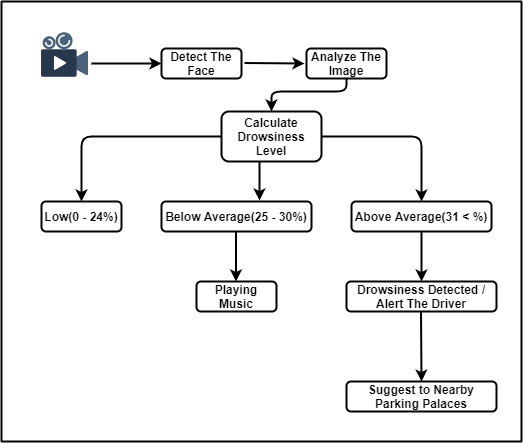

Literature Survey
Based on the research conducted by Jongseong Gwak, Akinari Hirao, and Motoki Shino, drowsiness has got detected based on hybrid sensing, which has got based on machine learning. Their research focused on alerting the drivers based on the driver's level of drowsiness. They have used drowsiness level, the driver's performance, and behavioral and psychological signs. Research conducted by Mohamad-Hoseyn Sigari, Mahmood Fathy, and Mohsen Soryani focused on fatigue and distraction while driving a vehicle. Here they have introduced an approach to find the symptoms of face and eyes. Researchers have used a face template matching and used horizontal projection to extract hypervigilance symptoms from both the face and eye of the driver. Researchers used the rotation of the head as a symptom to identify distraction from the face area. The data they have found by extracting is the percentage of eye closure, change in eyelid's distance while comparing with usual distance, and the rate of eye closure. According to T. Vesselenyi, S. Moca1, A. Rus1, T. Mitran1, B. Tătaru1, there are two possibilities to detect drowsiness. They have a proposed a method to identify drowsiness using two artificial neural networks. Those are an autoencoder network and a hidden layer network. Researchers used the images taken while driving. By those images, they analyzed whether the eyes are opened or closed or half-opened. Lisheng Jin, Qingning Niu, Yuying Jiang, Huacai Xian, Yanguang Qin, and Meijiao Xu have also researched to detect drowsiness. Their research used a support vector machine to detect eyeball movements. The collected data included the frequency of blinking , the direction of gaze, and fixation time. The system that we develop can detect and alert the sleepy driver to avoid the risk of accidents.This detection system is implemented on Android-based smartphones application. We use the target human eye object because the adult's Human eyes blink 10-15 times in one minute. We use the Keras and TensorFlow classifier object detection method. Keras classifier makes it easy to distinguish between the background of objects and the objects that are the target itself.
Methodology
The eyes are recognized using dlib's face landmarks.dat since it is a more effective approach than the previous one. The face is detected using haar-like characteristics because it is a rapid and efficient way. When both eyes are detected, they are fed into a convolutional neural network that has been trained to classify them. A counter's value will grow if both eyes are categorized as closed; otherwise, it will decrease. When the counter hits a certain level, the driver is considered drowsy, an alarm sounds, and a red border appears around the application's window. When the value of the counter falls below the threshold, the alarm will go off and the border will disappear. Image data is often analyzed using convolutional neural networks (CNN), which convert images into output results. However, to understand the spatial connection between each feature for the two states, we decided to design a 1-D CNN and send numeric features as sequential input data. A convolution layer, a later flattened layer, two fully connected dense layers, and an output layer in front of the output layer form our CNN model. Before the output of the convolution layer is transferred to the first dense layer, the flattening layer smoothsit out and makes it linear. To prevent our model from overfitting the training data, the abandonment layer randomly removes 20% of the output nodes from the second dense layer. A single exit node in the last dense shift outputs 0 for alarm and 1 for drowsiness. OpenCV was used to collect video from a camera and feed it into a Deep Learning model that can determine whether a person's eyes are 'Open' or 'Closed.' The following are the steps involved:
-
• Step 1: Take video from a camera as input and read it with OpenCV.
-
• Step 2: Create a Region of Interest around the face in the video (ROI).
-
• Step 3: Use the ROI to detect the eyes and submit them to the CNN classifier.
-
• Step 4: The CNN classifier will determine whether or not the eyes are open.
-
• Step 5: Calculate a score to see if the person is sleepy (If the eyes are close for above 20 seconds
the alarm will ring).
Keras was used to create the model, which uses Convolutional Neural Networks (CNN). A convolutional neural network is a sort of deep neural network that works exceptionally well when it comes to image classification. A CNN is made up of three layers: an input layer, an output layer, 18 | P a g e and a hidden layer with numerous layers. These layers are convolution using a filter that conducts 2D matrix multiplication on both the layer and the filter. The CNN model architecture consists of the following layers:
-
• Convolutional layer; 32 nodes, kernel size 3
-
• Convolutional layer; 32 nodes, kernel size 3
-
• Convolutional layer; 64 nodes, kernel size 3
-
• Fully connected layer; 128 nodes
-
• The final layer is also a fully connected layer with 2 nodes. In all the layers, a Relu
activation function is used except the output layer in which the Softmax activation function
is used.

Research Problem
There are several problems to consider while creating a system to detect the driver's state. Detecting the driver's tiredness is one of the most difficult tasks. The researchers developed an algorithm to find, track, and use the driver's face and eyes to evaluate eye closure, which has been shown to be a reliable marker of weariness. The utilization of behavioral action measures is the subject of this study. A tired person exhibits a variety of distinct facial gestures, such as quick and steady squinting, pointing, or swinging their head, as well as regular yawning. Drivers' drowsiness levels are commonly determined by measuring their abnormal actions using computerized, non-meddling behavioral techniques. Sunlight is one of the most important components of any image processing system for detecting and tracking eye closure. The quality of data processing will be greatly influenced by an appropriate lighting system. As a result, an infrared illuminator can be employed to aid in the detection of eye closure at night, when most accidents occur when the lighting is low, depending on the route. Finally, an alarm system is set up to notify the driver if he or she is tired or inebriated, as well as the ignition system, which is utilized to start or switch the engine. Furthermore, some people wear sunglasses or specs while driving so that we can't see their eyes.
Research Gap
Some apps/devices are now available in new model cars to detect the driver's drowsiness and inform him or her while driving. However, we introduce a new solution for drivers to detect their drowsiness automatically by gathering the levels of drowsiness (low, below average, and above average) and trying to alert the driver using Artificial Intelligent Voice Assistant. When the Driver Crosses Each Level, the System will alert the Driver with voice and suggest some options to overcome their drowsiness, such as playing good music. When the user's sleepiness level exceeds "Above Average," the app/device will propose nearby free parking spaces and alert the driver to take a rest in those spaces.